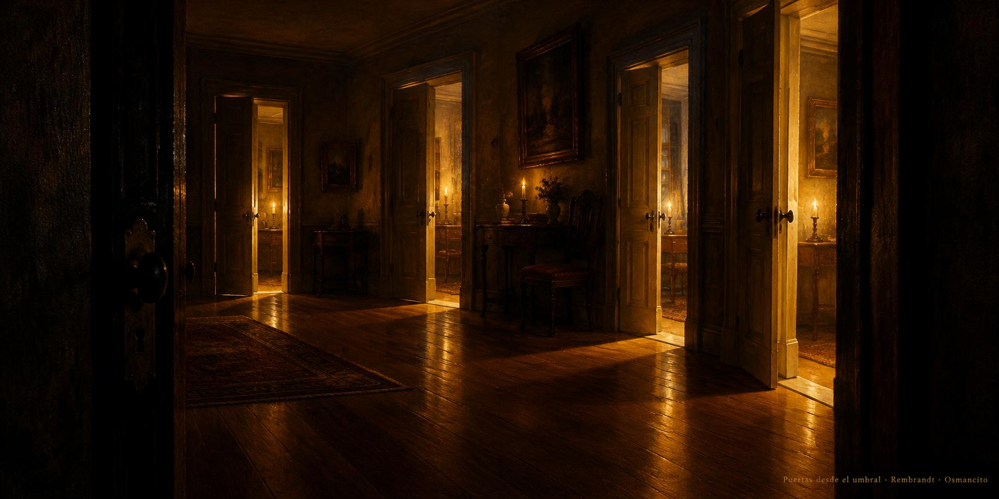

30 de octubre de 2026
Umbral, puertas, módulos y raíz

El día amaneció con una pregunta de las que mueven paredes: ¿los textos que mandan en la casa cumplen ellos mismos lo que mandan? La asistente leyó uno por uno los documentos que gobiernan el sitio y al terminar la mañana ya no había dos clases de papeles: todo texto que fija una regla es un módulo, y el Núcleo, la pieza que ordena a las demás, dice ahora con letra clara qué debe cumplir cada una, empezando por sí mismo. Quedó escrito además que en cada trabajo se abre primero la ruta y se revisa antes de entregar, sin que nadie tenga que recordarlo.
Con la casa ordenada llegaron las puertas. Cada sala estrenó pintura nueva, vertical como una puerta de verdad, y todas miran desde el mismo lugar: el umbral oscuro desde donde se ve la luz de adentro. Él las recorrió contento; alguna pidió otro clima y otra estación, y volvió cambiada hasta quedar a su gusto. Las láminas anchas de antes se pintaron de nuevo en la nueva medida y la fachada entera quedó de una sola familia.
La Tesorería sumó páginas: una entrada que explica desde cero un territorio nuevo y otra que cuenta cómo un papel de la bolsa aprende a vivir en la red, y en sus renglones fue tomando voz la escuelita, esa manera de escribir que parte de donde está el lector y explica solo lo que hace falta. Por la tarde, cartas viejas de un escritor de lejos salieron del correo y se ordenaron en un paseo de hallazgos que ya se camina en la sala Social.
Al caer la tarde, la pregunta de la mañana echó raíz: el Dominio Cero, la regla de escritura de la casa, quedó diciendo cómo se escribe todo, no solo cómo se nombra cada palabra. La noche trajo limpieza buena, pendientes viejos dados por cumplidos y un diccionario de velas abierto sobre la mesa, de esos que leen el ánimo de los mercados como quien lee el tiempo. El ánimo cerró en orden y en ganas: la casa tiene sus reglas escritas, sus puertas pintadas y su camino abierto.
© 2026 Osmancito
Parte del día: la unificación de los módulos bajo el Núcleo, las puertas verticales nuevas de las salas, el ajuste de raíz del Dominio Cero, «Las puertas de Warren Ellis» en la sala Social y las entradas nuevas de la Tesorería. Lectura en curso: Mientras Escribo, de Stephen King. En la copa: una bebida de luz de umbral.